概要
LINE Botを作りつつ、Messaging API(および周辺の技術)の基本的な使い方を学んでいただければと思います！
当日の持ち物
- LINEがインストール済みのスマホ
- ChromeがインストールされたPC（Chromeのバージョンは最新のものを使っていただければと！）
事前準備
- GitHubアカウント作成
- Amazon Web Servicesアカウント作成
- LINEアカウント作成(こちらのサイトでログインできるかどうかを確認ください)
使用するサービス・ツール
- Amazon Web Services
- Node.js
- GitHub
構成図
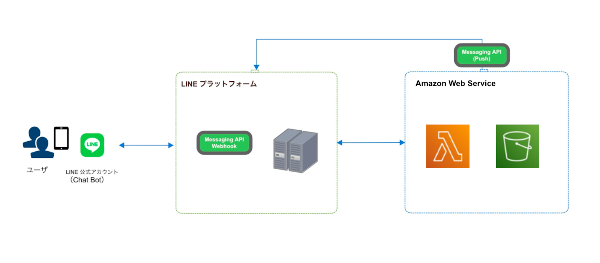
注意事項
若干、Amazon Web Servicesの課金が発生する可能性があります。それ以外は課金など発生しません。
チャネルの作成スタート
https://developers.line.me/ja/services/messaging-api/ にアクセス。
「今すぐはじめよう」のボタンを押して進めていきましょう。

「LINEアカウントでログイン」を押してください。

LINEのログインを求められるのでログインしてください。

チャネルの種類
Messaging APIになっているか確認します。

プロバイダ
既にプロバイダーを作っている場合 → 利用するプロバイダーを選択しましょう。

初めて → 新規プロバイダー作成を選択しプロバイダー名を入力しましょう。
（LINEという文字は含められません。）

会社・事業者の所在国・地域

チャネルアイコン
チャネルアイコンを登録しましょう。（今回は必須ではありません）

チャネル名、チャネル説明
下記を入力しましょう。
チャネル名：「HandsonBot」
チャネル説明：「HandsonBotです。」
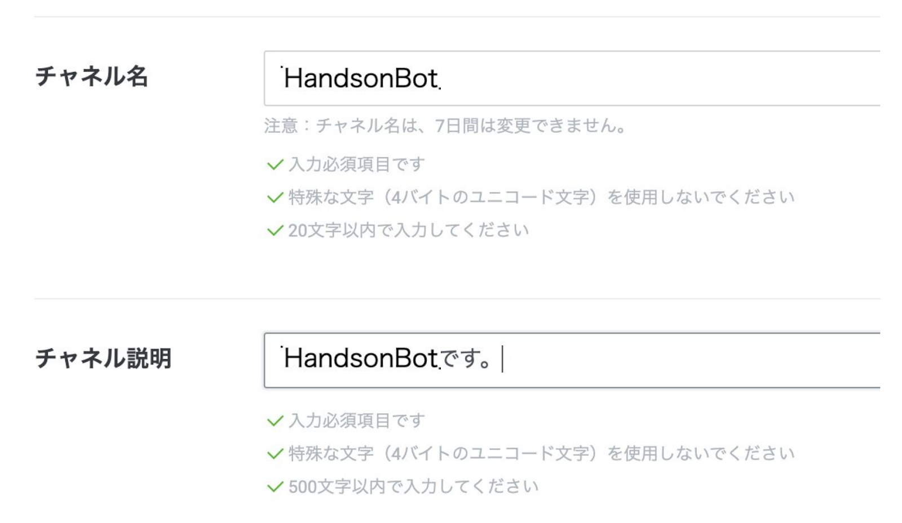
大業種、小業種

メールアドレス、プライバシーポリシーURL、サービス利用規約URL
メールアドレスを確認しましょう。
プライバシーポリシーURLとサービス利用規約URLは入力しなくても大丈夫です。

作成ボタン
下記２点の利用規約にチェックをして「作成」ボタンを押しましょう。

「OK」を押しましょう。

「同意する」を押しましょう。
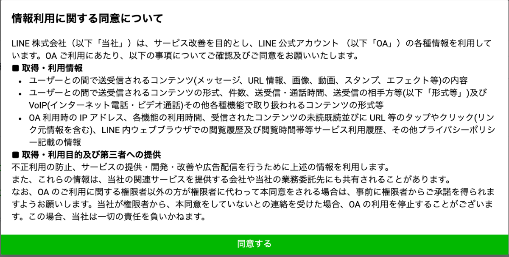
LINE公式アカウント(LINE Bot)と友だちになる
QRコードで友だち追加
「Messaging API設定」タブに移動し、QRコードを読み取って、友だち追加をしましょう。

チャネルシークレット、アクセストークンの取得
「チャネル基本設定」タブからチャネルシークレットを、「Messaging API設定」タブからアクセスキーをそれぞれ取得します。
- チャネルシークレット


- アクセストークン


応答モードをOFFにする
LINE Official Account Manager 画面にアクセスして、Botの「応答モード」設定をOFFにします。（デフォルトの設定はONになっており、メッセージを送るたびにデフォルトのメッセージが返ってきてしまうため）

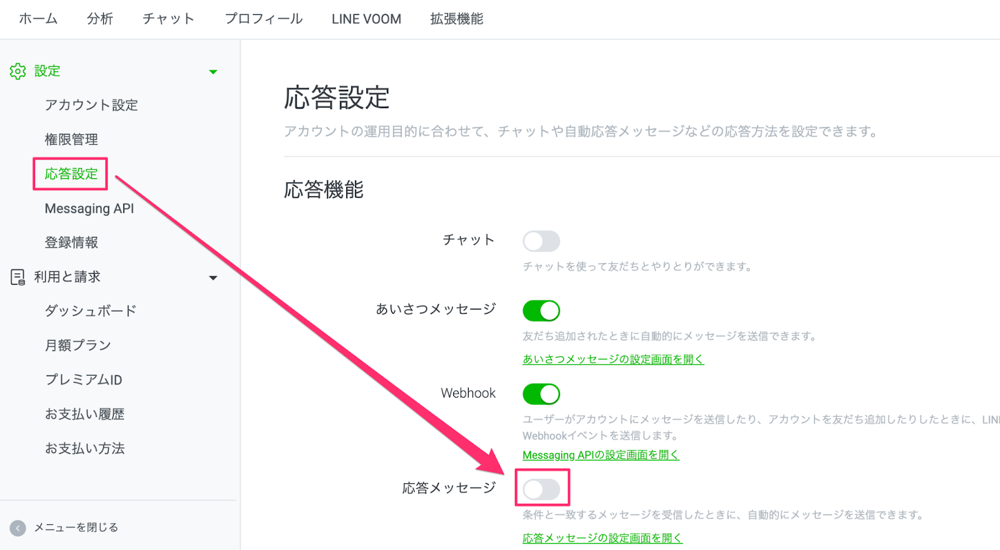
Cloud9作成
下記の方法でCloud9を作成してください。
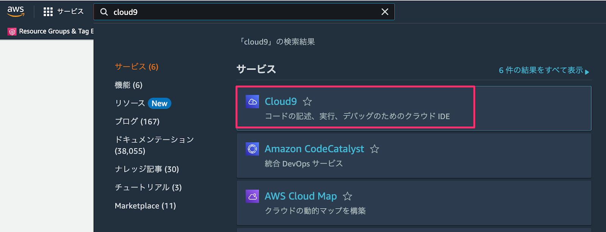
Create enviromentをクリックします。
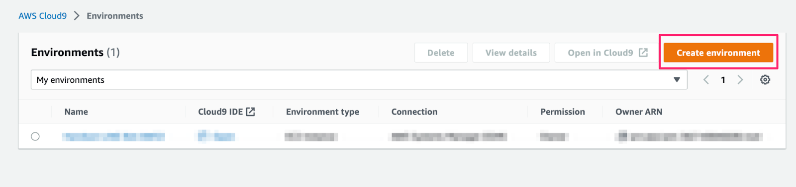
instance は「t2.medium」を選択します。
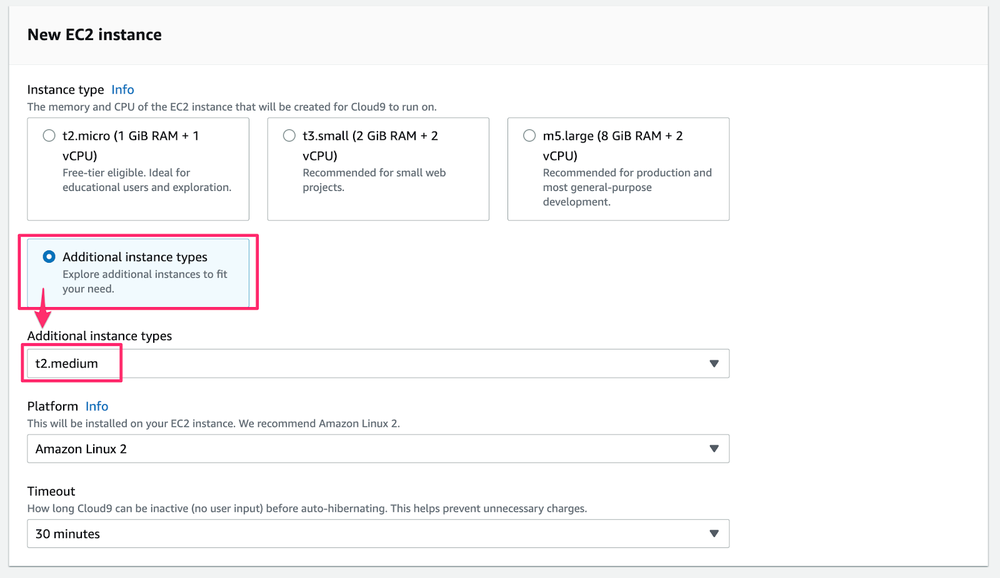
Createで作成します。
作成できたら、起動します。
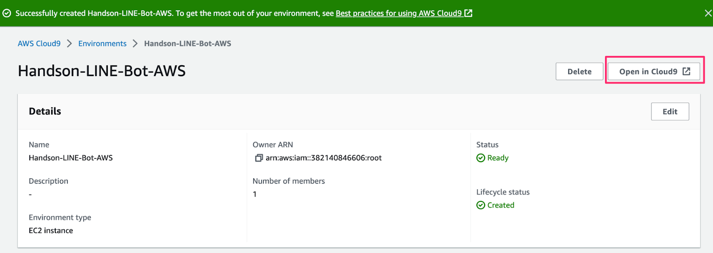
アプリケーションの用意
Cloud9のターミナル上で下記のコマンドを実行していってください。
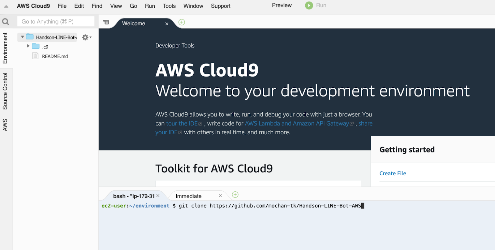
- 実行するコマンド
git clone https://github.com/mochan-tk/Handson-LINE-Bot-AWS
cd Handson-LINE-Bot-AWS
## コマンドを実行しボリュームを増やす
bash resize.sh 20
アプリケーションコードのデプロイ
ターミナル上で下記のコマンドを実行していってください。
アプリケーションのコードがデプロイされます。
- 実行するコマンド
npm install
cdk synth
cdk bootstrap
MSG_CHANNEL_SECRET=< your secret >
MSG_CHANNEL_ACCESS_TOKEN=< your access token >
cdk deploy \
-c MSG_CHANNEL_SECRET=${MSG_CHANNEL_SECRET} \
-c MSG_CHANNEL_ACCESS_TOKEN=${MSG_CHANNEL_ACCESS_TOKEN}yを入力します。
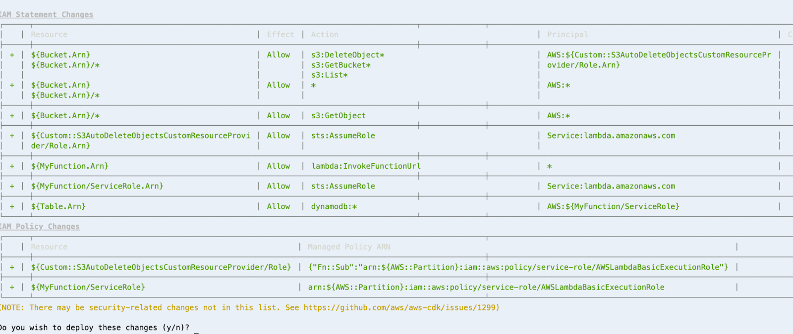
上記、実行後は下記のようにURLが払い出されるのでメモしておきます。（Webhookの設定で使います）
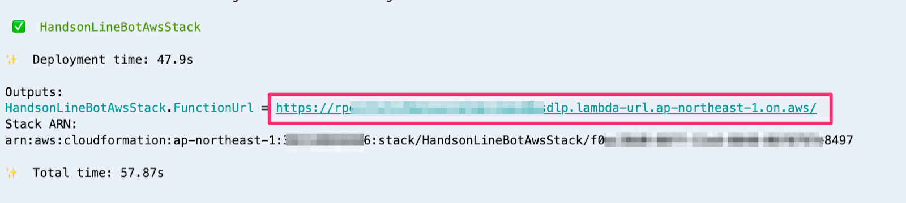
Webhookの設定
LINE Developersのコンソール画面に戻って、「Messaging API設定」タブから上記で取得したAzure FunctionsのURLを設定します。これでLINEのBotを動かす準備は全て整いました！
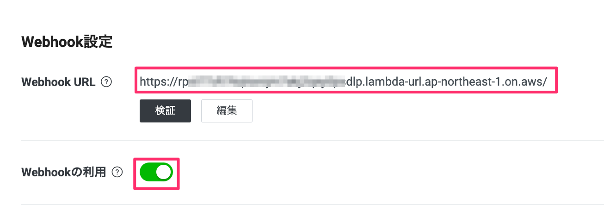
動作確認
さっそく動かしてみましょう。トーク画面からBotに対してメッセージを送るとオウム返しでメッセージが送られてきたと思います！
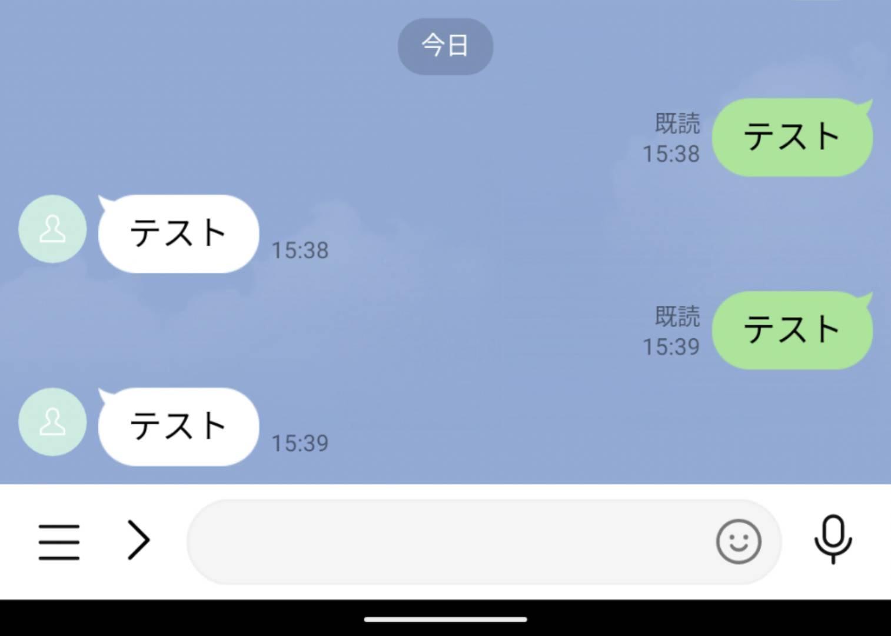
LINE Official Account Manager 画面でリッチメニューの設定
LINE公式アカウントの管理画面にアクセスし、リッチメニューを作成していきます。まずは「ホーム」→「リッチメニュー」→「作成」をクリックします。
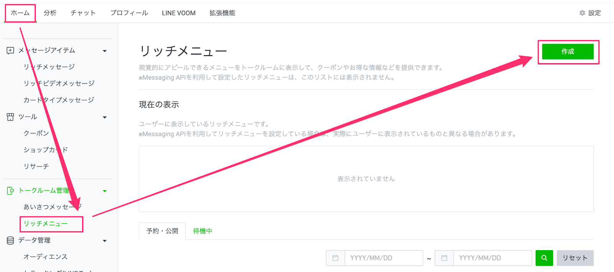
「基本設定」の項目を入力し、その後テンプレートの選択を行います。
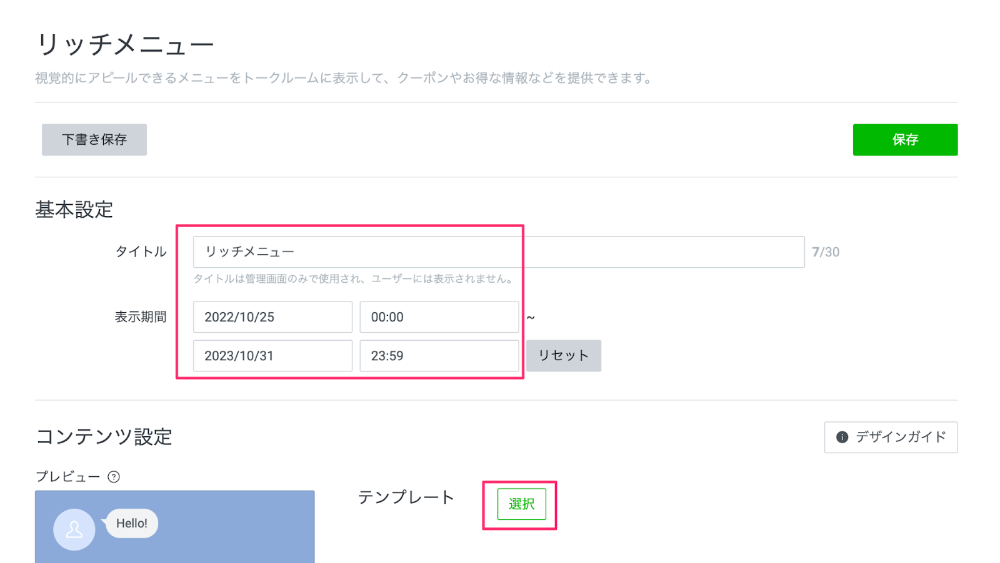
ここでは４つのフレームに別れたテンプレートを選択します。

次にリッチメニューに使用する画像を作成します。「画像を作成」ボタンから、４つのフレームに対してそれぞれテキストを入力し、最後に右上の適用ボタンを押してください。
場所 | 入力するテキスト |
左上 | camera |
右上 | 位置情報 |
左下 | Flex |
右下 | Quick Reply |


次にアクションの項目を下記の情報を参考に埋めていきます。最後に保存ボタンを押すのをお忘れなく。
番号 | タイプ | 入力欄 | ラベル |
A | リンク | https://line.me/R/nv/camera/ | camera |
B | リンク | https://line.me/R/nv/location/ | location |
C | テキスト | flex | なし |
D | テキスト | quick | なし |

LINE公式アカウント(LINE Bot)上は下記のようになります。
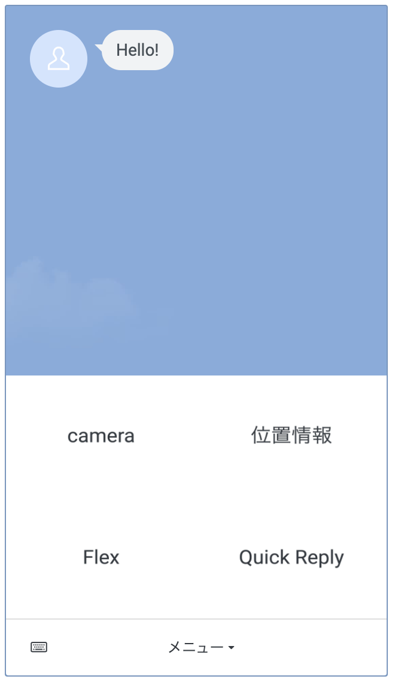
（参考）Messaging APIでのリッチメニューを作成
リッチメニューはMessaging APIでも作成でき、さらに柔軟な対応が可能です。今回のハンズオンの後半（『リッチメニュー応用』）で扱っていきます。
下記に参考情報も記載いたします。
下記を参考にコマンドくを実行し、複数のリッチメニューを切り替えます。
- リッチメニューA（richmenu-a）を作成する
curl -v -X POST https://api.line.me/v2/bot/richmenu \
-H 'Authorization: Bearer '${MSG_CHANNEL_ACCESS_TOKEN} \
-H 'Content-Type: application/json' \
-d \
'{
"size": {
"width": 2500,
"height": 1686
},
"selected": false,
"name": "Hands On Menu A",
"chatBarText": "Tap to open",
"areas": [
{
"bounds": {
"x": 1250,
"y": 0,
"width": 1250,
"height": 50
},
"action": {
"type": "richmenuswitch",
"richMenuAliasId": "hands-on-richmenu-alias-b",
"data": "richmenu-changed-to-b"
}
},
{
"bounds": {
"x": 0,
"y": 70,
"width": 1250,
"height": 750
},
"action": {
"type": "uri",
"uri": "https://line.me/R/nv/camera/"
}
},
{
"bounds": {
"x": 1250,
"y": 70,
"width": 1250,
"height": 750
},
"action": {
"type": "uri",
"uri": "https://line.me/R/nv/location/"
}
},
{
"bounds": {
"x": 0,
"y": 830,
"width": 1250,
"height": 800
},
"action": {
"type": "message",
"text": "flex"
}
},
{
"bounds": {
"x": 1250,
"y": 830,
"width": 1250,
"height": 800
},
"action": {
"type": "message",
"text": "quick"
}
}
]
}'- 返ってきたリッチメニューIDをコピーし、下記コマンドを実行します。
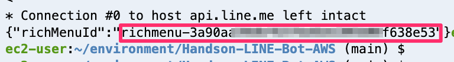
RICHMENU_ID_A=< リッチメニューID >- リッチメニューAに画像をアップロードする
curl -v -X POST https://api-data.line.me/v2/bot/richmenu/${RICHMENU_ID_A}/content \
-H 'Authorization: Bearer '${MSG_CHANNEL_ACCESS_TOKEN} \
-H "Content-Type: image/png" \
-T richmenu/tabA.png- リッチメニューB（richmenu-b）を作成する
curl -v -X POST https://api.line.me/v2/bot/richmenu \
-H 'Authorization: Bearer '${MSG_CHANNEL_ACCESS_TOKEN} \
-H 'Content-Type: application/json' \
-d \
'{
"size": {
"width": 2500,
"height": 1686
},
"selected": false,
"name": "Hands On Menu B",
"chatBarText": "Tap to open",
"areas": [
{
"bounds": {
"x": 0,
"y": 0,
"width": 1250,
"height": 50
},
"action": {
"type": "richmenuswitch",
"richMenuAliasId": "hands-on-richmenu-alias-a",
"data": "richmenu-changed-to-a"
}
},
{
"bounds": {
"x": 0,
"y": 70,
"width": 1250,
"height": 750
},
"action": {
"type": "uri",
"uri": "https://line.me/R/nv/camera/"
}
},
{
"bounds": {
"x": 1250,
"y": 70,
"width": 1250,
"height": 750
},
"action": {
"type": "uri",
"uri": "https://line.me/R/nv/location/"
}
},
{
"bounds": {
"x": 0,
"y": 830,
"width": 1250,
"height": 800
},
"action": {
"type": "message",
"text": "flex"
}
},
{
"bounds": {
"x": 1250,
"y": 830,
"width": 1250,
"height": 800
},
"action": {
"type": "message",
"text": "quick"
}
}
]
}'- 返ってきたリッチメニューIDをコピーし、下記コマンドを実行します。
RICHMENU_ID_B=< リッチメニューID >- リッチメニューBに画像をアップロードする
curl -v -X POST https://api-data.line.me/v2/bot/richmenu/${RICHMENU_ID_B}/content \
-H 'Authorization: Bearer '${MSG_CHANNEL_ACCESS_TOKEN} \
-H "Content-Type: image/png" \
-T richmenu/tabB.png- リッチメニューAをデフォルトのリッチメニューにする
curl -v -X POST https://api.line.me/v2/bot/user/all/richmenu/${RICHMENU_ID_A} \
-H 'Authorization: Bearer '${MSG_CHANNEL_ACCESS_TOKEN}- リッチメニューエイリアスAを作成する
curl -v -X POST https://api.line.me/v2/bot/richmenu/alias \
-H 'Authorization: Bearer '${MSG_CHANNEL_ACCESS_TOKEN} \
-H 'Content-Type: application/json' \
-d \
'{
"richMenuAliasId": "hands-on-richmenu-alias-a",
"richMenuId": "'"${RICHMENU_ID_A}"'"
}'- リッチメニューエイリアスBを作成する
curl -v -X POST https://api.line.me/v2/bot/richmenu/alias \
-H 'Authorization: Bearer '${MSG_CHANNEL_ACCESS_TOKEN} \
-H 'Content-Type: application/json' \
-d \
'{
"richMenuAliasId": "hands-on-richmenu-alias-b",
"richMenuId": "'"${RICHMENU_ID_B}"'"
}'リッチメニューのエラーは下記を確認してください。
https://developers.line.biz/ja/reference/messaging-api/#create-rich-menu-alias-error-response
トーク画面から一旦離れ、確認します。
 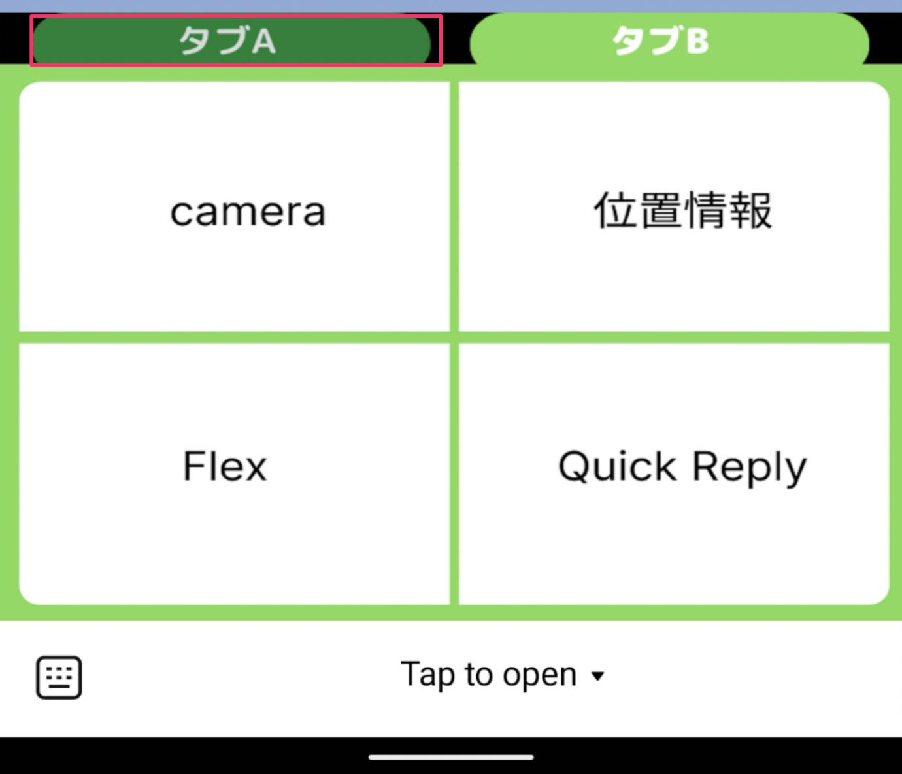
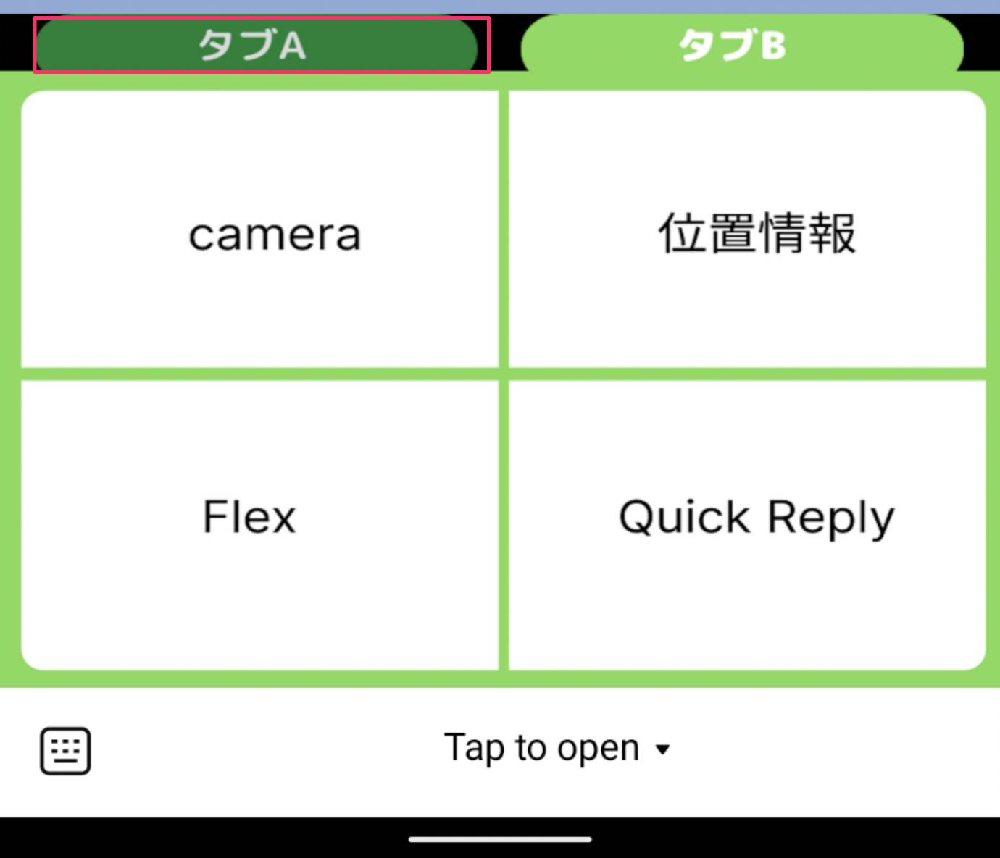
URLスキームを使うとカメラや位置情報などが起動できたりします、いくつか用意されていますので試していきましょう。
カメラの起動
リッチメニュー左上の「camera」をタップしてください。カメラが起動します。

位置情報の起動
リッチメニュー右上の「位置情報」をタップしてください。位置情報が起動します。
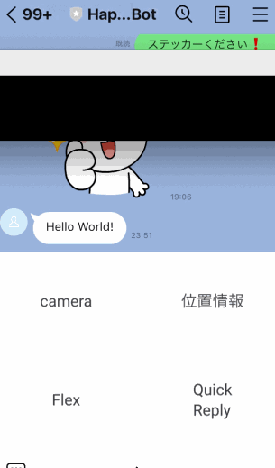
LINEでは様々なメッセージ形式を扱うことができます。
今回のコードも見ていただくと理解がグッと進みます。
画像メッセージを扱う
カメラを起動して写真を撮るか既に撮った写真を選択するかで、画像をトーク画面に投稿してみてください。送った画像をそのまま返すコードを今回用意しました。

位置情報メッセージを扱う
位置情報をトーク画面に投稿してみてください。全く同じ位置情報メッセージが返ってくると思います。

音声メッセージを扱う
マイクから音声を投稿してみてください。音声メッセージが返ってきます。
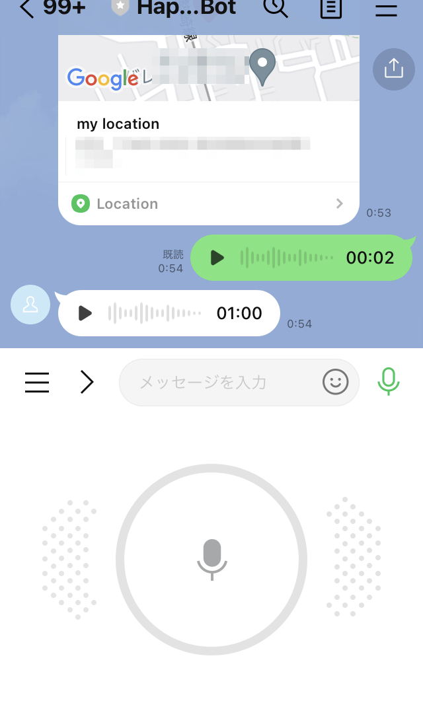
Flex Messageを扱う
リッチメニューの左下をタップして、「flex」というテキストメッセージを投稿します。するとちょっとリッチなUIが返ってくると思います。これがFlex Messageです。Flex Message Simulator が用意されており、レイアウトを簡単にカスタマイズすることができます。（詳細はコチラを参照ください。）

Quick Replyを扱う
クイックリプライを使うとユーザは簡単に返信を行うことができます。
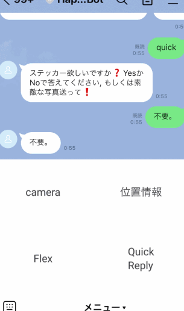
課金が気になる方は、下記のコマンドを実行してリソースグループごと作成したAWSのリソースを削除してください。
cdk destroyyを入力します。
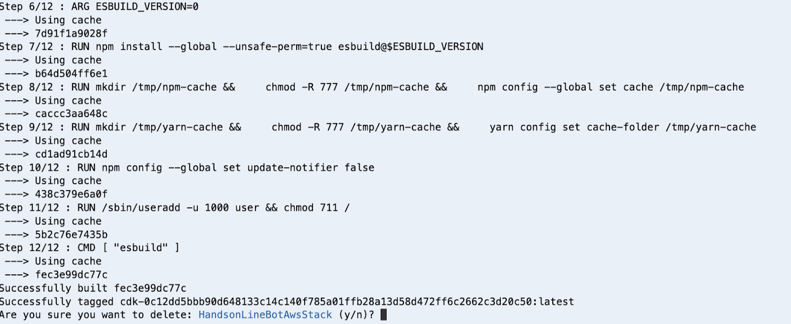
リソースの削除ができました。
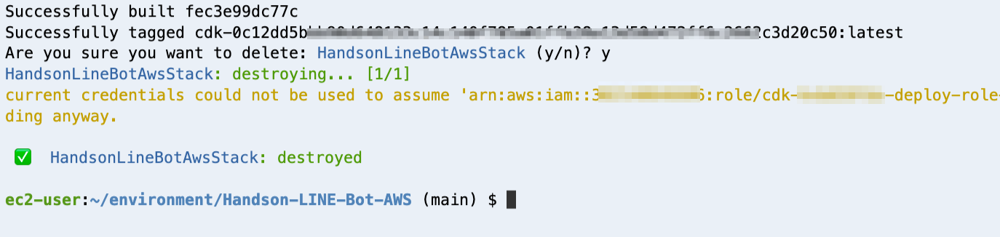